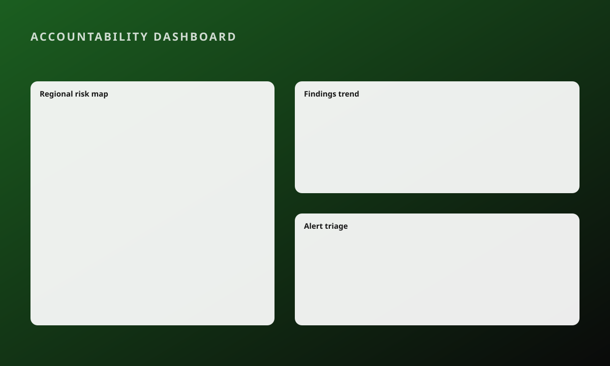

Public-sector platform · Data visualisation and accessibility
National public-sector accountability platform
Built the public-facing frontend for audit findings, corruption data and statistical reporting.
The problem
Government stakeholders and the public needed audit findings, corruption data and statistical reporting in one place. The data was dense and had to be readable by people who are not analysts.
My role and boundaries
- Built the public frontend aggregating news, corruption data, audit findings and statistical reporting.
- Built a province-level risk heatmap (Leaflet) and interactive trend, statistical and comparative charts.
- Maintained WCAG 2.2 AA compliance across all public-facing surfaces.
- Redesigned the notifications system and the media-risk triage UX, then built it.
- Maintained GitHub Actions pipelines in a multi-module monorepo and fixed dependency-isolation build failures.
Three decisions and what I traded away
A regional heatmap as the entry point
A province-level risk heatmap surfaces corruption and audit data by region.
Triage designed around alerts
Designed the UX for how audit teams triage alerts and fraud or corruption articles.
Process
Research with audit teams
Heatmap and charts
Accessibility pass
Pipeline and release
Outcome
WCAG 2.2 AAmaintained across all public-facing surfaces
Back to: the portfolio →